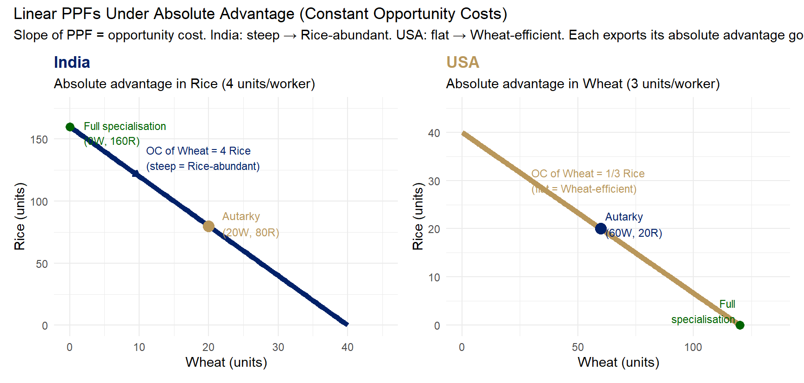

# India: L = 40 worker-days. Rice max = 40×4 = 160; Wheat max = 40×1 = 40
# PPF: R = 160 - 4W (OC of 1 Wheat = 4 Rice → steep slope)
# USA: L = 40 worker-days. Rice max = 40×1 = 40; Wheat max = 40×3 = 120
# PPF: R = 40 - (1/3)W (OC of 1 Wheat = 1/3 Rice → flat slope)
wheat_india <- seq(0, 40, by = 0.5)
rice_india <- 160 - 4 * wheat_india
wheat_usa <- seq(0, 120, by = 0.5)
rice_usa <- 40 - (1/3) * wheat_usa
p1 <- ggplot() +
geom_line(data = data.frame(w = wheat_india, r = rice_india),
aes(x = w, y = r), color = "#012169", linewidth = 2) +
geom_point(aes(x = 20, y = 80), color = "#B9975B", size = 4) +
annotate("text", x = 22, y = 82,
label = "Autarky\n(20W, 80R)", size = 3.2, hjust = 0, color = "#B9975B") +
geom_point(aes(x = 0, y = 160), color = "darkgreen", size = 3) +
annotate("text", x = 2, y = 155,
label = "Full specialisation\n(0W, 160R)", size = 3, hjust = 0, color = "darkgreen") +
annotate("segment", x = 5, y = 140, xend = 10, yend = 120,
arrow = arrow(length = unit(0.2, "cm")),
color = "#012169", linewidth = 0.8) +
annotate("text", x = 11, y = 135,
label = "OC of Wheat = 4 Rice\n(steep = Rice-abundant)",
size = 3, hjust = 0, color = "#012169") +
labs(title = "India",
subtitle = "Absolute advantage in Rice (4 units/worker)",
x = "Wheat (units)", y = "Rice (units)") +
scale_x_continuous(limits = c(0, 45)) +
scale_y_continuous(limits = c(0, 175)) +
theme_minimal(base_size = 11) +
theme(plot.title = element_text(color = "#012169", face = "bold", size = 13))
p2 <- ggplot() +
geom_line(data = data.frame(w = wheat_usa, r = rice_usa),
aes(x = w, y = r), color = "#B9975B", linewidth = 2) +
geom_point(aes(x = 60, y = 20), color = "#012169", size = 4) +
annotate("text", x = 62, y = 21,
label = "Autarky\n(60W, 20R)", size = 3.2, hjust = 0, color = "#012169") +
geom_point(aes(x = 120, y = 0), color = "darkgreen", size = 3) +
annotate("text", x = 118, y = 3,
label = "Full\nspecialisation", size = 3, hjust = 1, color = "darkgreen") +
annotate("text", x = 30, y = 30,
label = "OC of Wheat = 1/3 Rice\n(flat = Wheat-efficient)",
size = 3, hjust = 0, color = "#B9975B") +
labs(title = "USA",
subtitle = "Absolute advantage in Wheat (3 units/worker)",
x = "Wheat (units)", y = "Rice (units)") +
scale_x_continuous(limits = c(0, 135)) +
scale_y_continuous(limits = c(0, 45)) +
theme_minimal(base_size = 11) +
theme(plot.title = element_text(color = "#B9975B", face = "bold", size = 13))
p1 + p2 + plot_annotation(
title = "Linear PPFs Under Absolute Advantage (Constant Opportunity Costs)",
subtitle = "Slope of PPF = opportunity cost. India: steep → Rice-abundant. USA: flat → Wheat-efficient. Each exports its absolute advantage good."
)